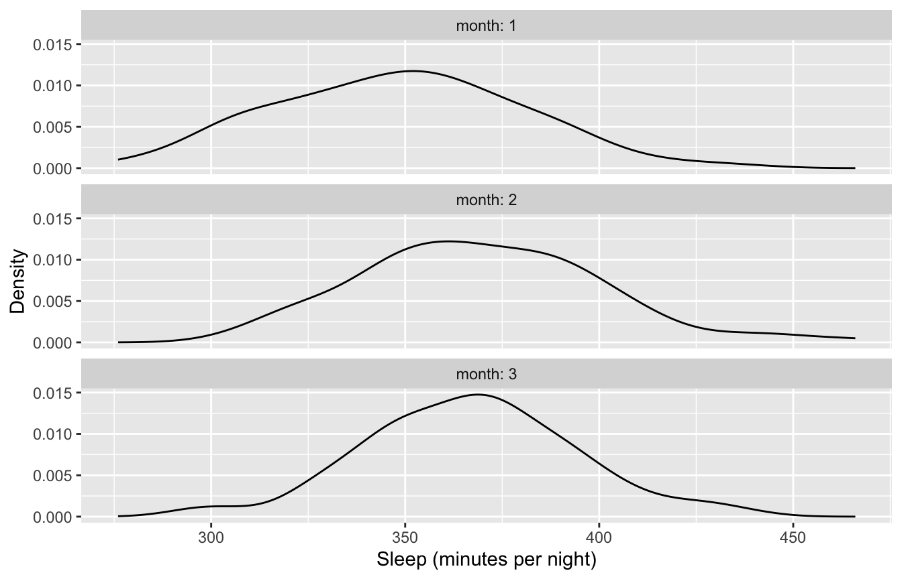
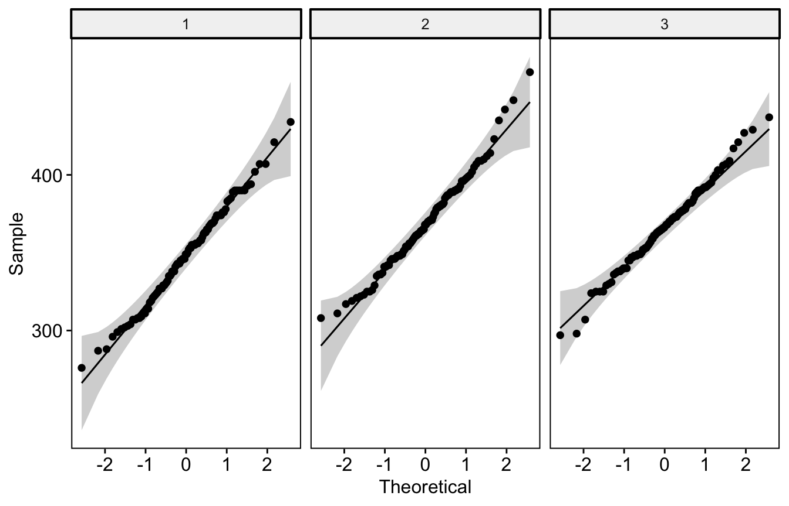

library(tidyverse)
library(haven)
library(effectsize)
library(rstatix)
library(ggpubr)4 ANCOVA and Repeated Measures ANOVA
This chapter extends the ANOVA model in two directions. First, analysis of covariance (ANCOVA) adds continuous covariates to a between-groups comparison. This can reduce error variance and increase power. Second, repeated measures ANOVA compares means when the same participants are measured more than once.
4.1 ANCOVA with a pretest covariate
4.1.1 The data
In our first example, 82 participants were randomly assigned to a control group or to an optimism therapy group. Happiness was measured before (hap_pre) and after (hap_post) the intervention.
hap1 <- read_dta("data/hap-ancova1.dta")
hap1_clean <- hap1 |>
mutate(treat = as_factor(treat))
summary(hap1_clean) id hap_pre hap_post treat
Min. : 1.00 Min. :28.0 Min. :30.00 Control group :41
1st Qu.:21.25 1st Qu.:44.0 1st Qu.:47.00 Optimism therapy group:41
Median :41.50 Median :51.5 Median :51.00
Mean :41.50 Mean :51.3 Mean :53.46
3rd Qu.:61.75 3rd Qu.:58.0 3rd Qu.:59.00
Max. :82.00 Max. :81.0 Max. :77.00 A covariate is only useful if it is related to the outcome. Here, pretest and posttest happiness are moderately correlated:
cor.test(hap1_clean$hap_pre, hap1_clean$hap_post)
Pearson's product-moment correlation
data: hap1_clean$hap_pre and hap1_clean$hap_post
t = 6.3349, df = 80, p-value = 1.302e-08
alternative hypothesis: true correlation is not equal to 0
95 percent confidence interval:
0.4127435 0.7063892
sample estimates:
cor
0.5779818 4.1.2 ANOVA without the covariate
For comparison, we first ignore the pretest and compare posttest means with a one-way ANOVA:
anova1 <- aov(hap_post ~ treat, data = hap1_clean)
summary(anova1) Df Sum Sq Mean Sq F value Pr(>F)
treat 1 226 225.56 2.381 0.127
Residuals 80 7579 94.74 The treatment group’s posttest mean is higher, but the difference is not significant.
4.1.3 Adding the covariate
Now we add hap_pre as a covariate. The order of terms in aov() matters. aov() uses sequential (Type I) sums of squares, so each term is adjusted only for the terms listed before it. To test the treatment effect after adjusting for the pretest, the covariate must come first.
ancova1 <- aov(hap_post ~ hap_pre + treat, data = hap1_clean)
summary(ancova1) Df Sum Sq Mean Sq F value Pr(>F)
hap_pre 1 2607 2607.2 42.220 6.7e-09 ***
treat 1 319 318.8 5.163 0.0258 *
Residuals 79 4878 61.8
---
Signif. codes: 0 '***' 0.001 '**' 0.01 '*' 0.05 '.' 0.1 ' ' 1After adjusting for pretest happiness, the treatment effect is significant. Two things changed. First, the pretest absorbed much of the error variance, which made the test of the treatment effect more sensitive. Second, the treatment group started slightly lower at pretest, so adjusting for the pretest makes the treatment effect a little larger.
When two loaded packages have functions with the same name, the one loaded last masks the other. To make sure R uses the omega_squared() function from effectsize, we name the package with ::.
effectsize::omega_squared(ancova1, partial = TRUE)4.1.4 ANCOVA as a regression
ANCOVA is a regression model with a categorical predictor and a continuous covariate. The regression output gives the same test of the treatment effect, along with a coefficient that is easier to interpret:
regression1 <- lm(hap_post ~ hap_pre + treat, data = hap1_clean)
summary(regression1)
Call:
lm(formula = hap_post ~ hap_pre + treat, data = hap1_clean)
Residuals:
Min 1Q Median 3Q Max
-20.7017 -3.7916 -0.0503 4.2741 18.3137
Coefficients:
Estimate Std. Error t value Pr(>|t|)
(Intercept) 20.5479 4.8834 4.208 6.76e-05 ***
hap_pre 0.6031 0.0912 6.613 4.07e-09 ***
treatOptimism therapy group 3.9496 1.7382 2.272 0.0258 *
---
Signif. codes: 0 '***' 0.001 '**' 0.01 '*' 0.05 '.' 0.1 ' ' 1
Residual standard error: 7.858 on 79 degrees of freedom
Multiple R-squared: 0.3749, Adjusted R-squared: 0.3591
F-statistic: 23.69 on 2 and 79 DF, p-value: 8.702e-09Holding pretest happiness constant, participants in the optimism therapy group scored about 3.9 points higher at posttest than participants in the control group. The p-value matches the ANCOVA above.
4.3 Repeated measures ANOVA
4.3.1 The data
In a repeated measures design, each participant contributes more than one score. The sleep_wide data record the average minutes of sleep per night for 100 participants over three months.
sleep_wide <- read_dta("data/sleep_wide.dta")
glimpse(sleep_wide)Rows: 100
Columns: 4
$ id <dbl> 1, 2, 3, 4, 5, 6, 7, 8, 9, 10, 11, 12, 13, 14, 15, 16, 17, 18, …
$ sleep1 <dbl> 303, 331, 374, 374, 349, 353, 343, 390, 307, 360, 327, 365, 322…
$ sleep2 <dbl> 349, 380, 400, 385, 442, 365, 370, 399, 410, 346, 371, 341, 364…
$ sleep3 <dbl> 382, 350, 345, 356, 366, 372, 354, 352, 375, 403, 336, 406, 368…4.3.2 Reshaping from wide to long
These data are in wide format, with one row per participant and one column per month. Most repeated measures functions in R expect long format, with one row per participant per month. pivot_longer() reshapes the data:
sleep_long <- sleep_wide |>
pivot_longer(
cols = starts_with("sleep"),
names_to = "month",
names_prefix = "sleep",
values_to = "sleep"
) |>
mutate(month = factor(month))
glimpse(sleep_long)Rows: 300
Columns: 3
$ id <dbl> 1, 1, 1, 2, 2, 2, 3, 3, 3, 4, 4, 4, 5, 5, 5, 6, 6, 6, 7, 7, 7, 8…
$ month <fct> 1, 2, 3, 1, 2, 3, 1, 2, 3, 1, 2, 3, 1, 2, 3, 1, 2, 3, 1, 2, 3, 1…
$ sleep <dbl> 303, 349, 382, 331, 380, 350, 374, 400, 345, 374, 385, 356, 349,…pivot_wider() reverses the process if you need to go back:
sleep_long |>
pivot_wider(
names_from = month,
names_prefix = "sleep",
values_from = sleep
)4.3.3 Exploring the data
Long format makes it easy to summarize and plot by month:
sleep_long |>
group_by(month) |>
get_summary_stats(sleep, type = "mean_sd")ggplot(sleep_long, aes(x = sleep)) +
geom_density() +
facet_wrap(~ month, ncol = 1, labeller = label_both) +
labs(x = "Sleep (minutes per night)", y = "Density")
4.3.4 Checking assumptions
Repeated measures ANOVA assumes that the outcome is approximately normal at each time point. A Q-Q plot and a Shapiro-Wilk test for each month check this:
ggqqplot(sleep_long, "sleep", facet.by = "month")
sleep_long |>
group_by(month) |>
shapiro_test(sleep)Points fall close to the line, and none of the Shapiro-Wilk tests are significant. This suggests the normality assumption is reasonable. Because the three scores come from the same people, we can also test whether they are jointly (multivariate) normal:
sleep_wide |>
select(starts_with("sleep")) |>
mshapiro_test()A second assumption, sphericity, requires that the variances of the differences between every pair of time points are equal. anova_test() checks it automatically, as shown in the next section.
4.3.5 Running the model
anova_test() from rstatix needs the outcome (dv), the participant identifier (wid), and the within-subjects factor (within):
sleep_aov <- anova_test(data = sleep_long, dv = sleep, wid = id, within = month)
sleep_aovANOVA Table (type III tests)
$ANOVA
Effect DFn DFd F p p<.05 ges
1 month 2 198 17.938 6.92e-08 * 0.09
$`Mauchly's Test for Sphericity`
Effect W p p<.05
1 month 1 0.995
$`Sphericity Corrections`
Effect GGe DF[GG] p[GG] p[GG]<.05 HFe DF[HF] p[HF] p[HF]<.05
1 month 1 2, 197.98 6.93e-08 * 1.021 2.04, 202.06 6.92e-08 *The output has three parts:
- The ANOVA table. Average sleep differs significantly across months.
gesis the generalized eta squared effect size. - Mauchly’s test for sphericity. A non-significant result (as here) suggests the sphericity assumption is met.
- Sphericity corrections. If Mauchly’s test were significant, we would report the Greenhouse-Geisser (GG) corrected p-value instead.
get_anova_table() returns the table to report. It applies the Greenhouse-Geisser correction automatically if sphericity is violated.
get_anova_table(sleep_aov)4.3.6 Post-hoc comparisons
Paired t-tests with a Bonferroni correction compare each pair of months:
sleep_long |>
pairwise_t_test(sleep ~ month, paired = TRUE, p.adjust.method = "bonferroni")Participants slept significantly more in months 2 and 3 than in month 1. Months 2 and 3 did not differ.